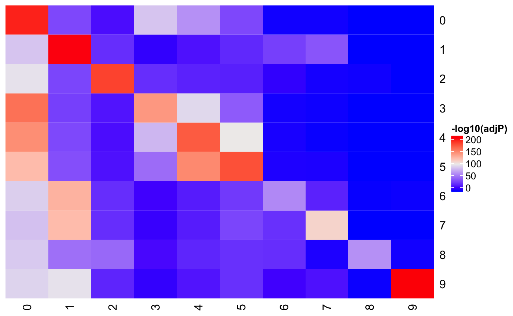
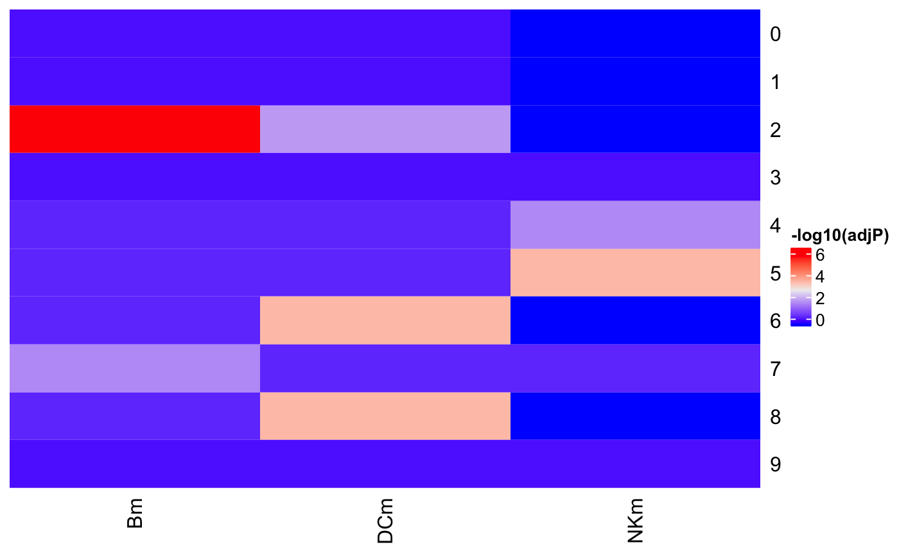
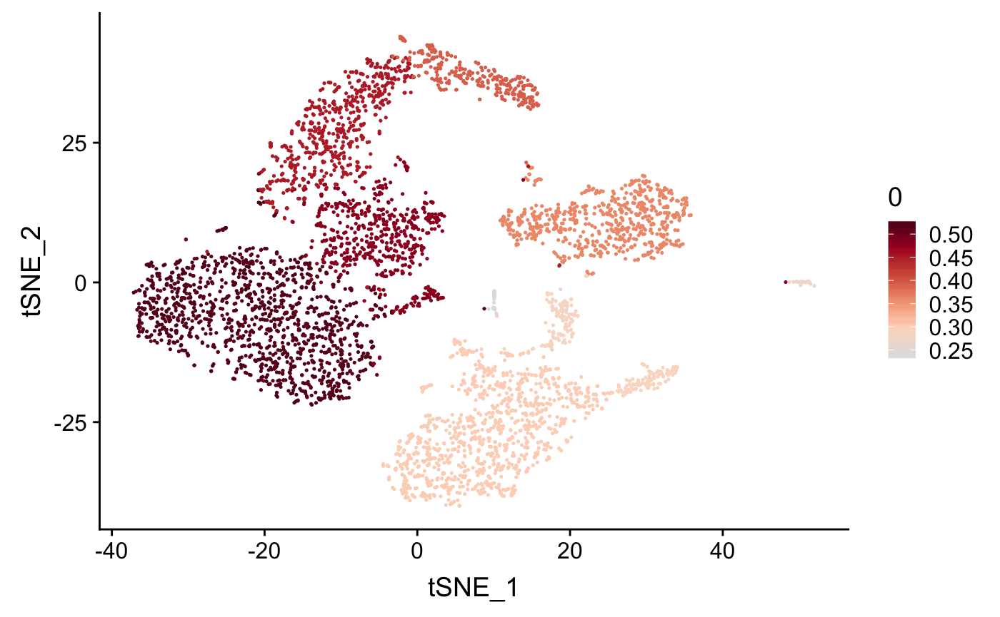
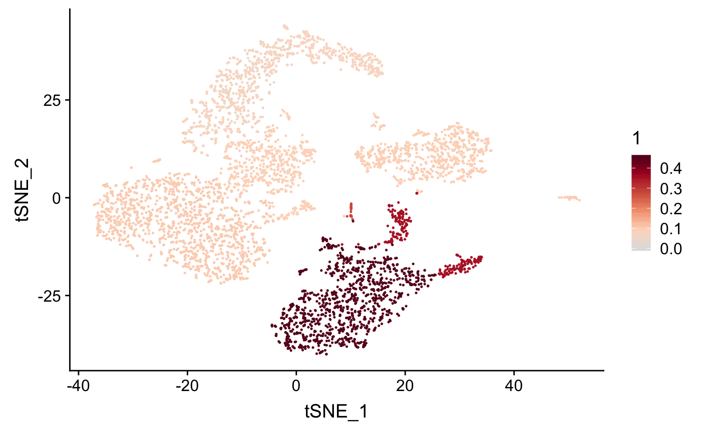
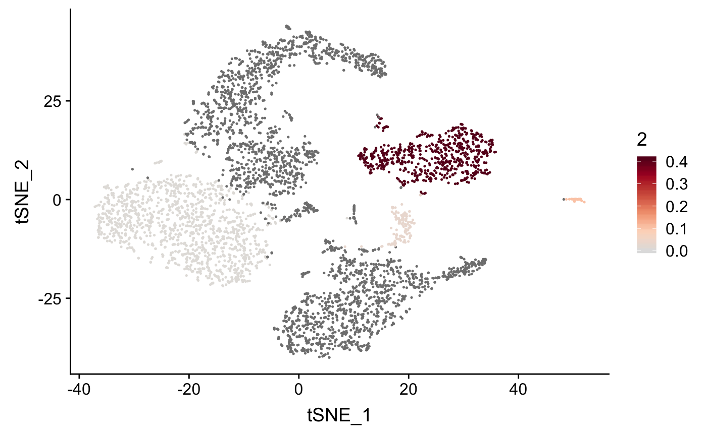
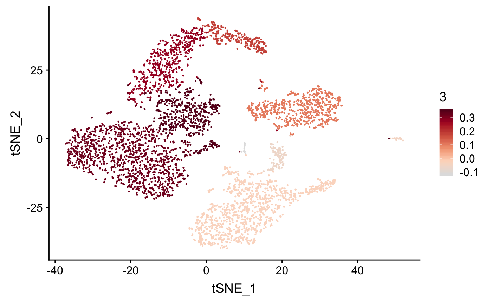
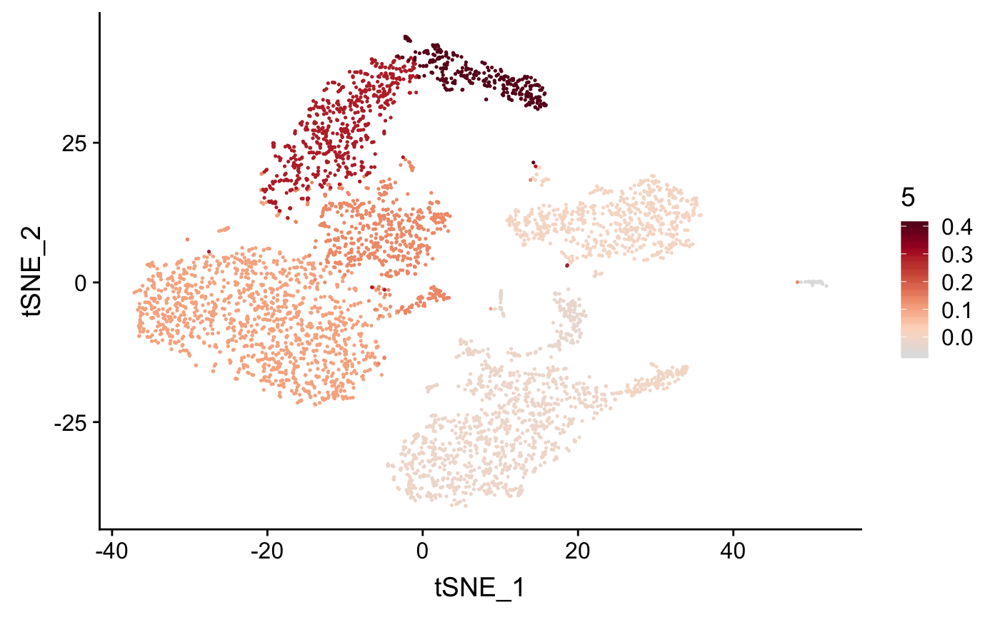
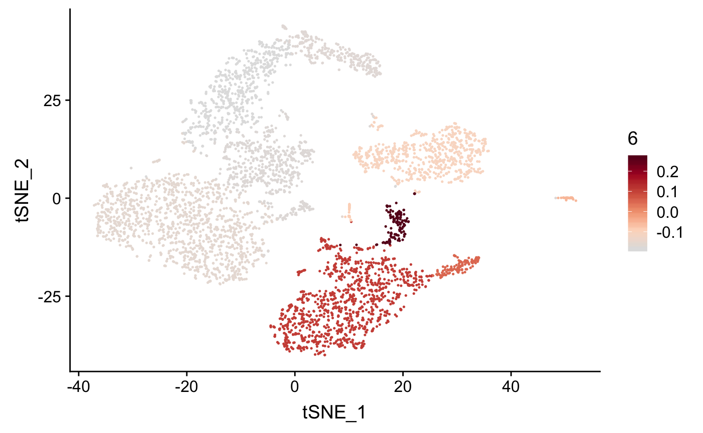

Cluster classification using mark gene lists
2018-09-13
Source:vignettes/gene_list.Rmd
gene_list.RmdThis vignette demonstrates how to apply ranked or unranked gene lists, based on prior knowledge of the cells/samples, to cluster classification. Here, average single cell RNA expression data for each cluster is used as input. The approach does work with full single cell expression matrix as well.
Unranked list: Preprocessing gene list into dataframe/matrix form
An unranked gene list can be converted from Seurat::FindAllMarkers(), or assembled from vectors of genes, into a format as shown below:
library(clustifyR)
# from dataframe generated by Seurat
pbmc4k_mm <- matrixize_markers(pbmc4k_markers)
head(pbmc4k_mm)## 0 1 2 3 4 5 6 7
## 1 RPL31 S100A8 CD79A IL7R GZMK FGFBP2 FCER1A HES4
## 2 RPS6 S100A9 IGHM ITGB1 CCL5 PRF1 CLEC10A CDKN1C
## 3 RPS25 LYZ CD79B IL32 TRGC2 HOPX ENHO RP11-1008C21.1
## 4 RPS12 S100A12 IGHD AQP3 CST7 GZMB CLIC2 FCGR3A
## 5 RPS27 RP11-1143G9.4 TCL1A TRAC GZMA KLRD1 FLT3 TCF7L2
## 6 RPL32 FCN1 MS4A1 LTB LYAR SPON2 PKIB CKB
## 8 9
## 1 LILRA4 PF4
## 2 LRRC26 SDPR
## 3 TPM2 TUBB1
## 4 SCT ACRBP
## 5 PTPRS GP9
## 6 CLEC4C TMEM40Unranked list: Binarize single cell gene expression data
Cluster average gene expression is transformed into binary 0 or 1s (defaults to keeping the top1000 genes by expression)
Unranked list: Classify
Applying the gene lists to binary expression data ouputs a matrix of -log10 of adjusted P values for hypergeometric test, or jaccard index. Correct cluster identity is called when only 4 marker genes is provided in PBMCs.
res <- compare_lists(pbmc4k_avgb,pbmc4k_mm)
Heatmap(res, cluster_rows = FALSE, cluster_columns = FALSE, heatmap_legend_param = list(title = "-log10(adjP)"))
res2 <- compare_lists(pbmc4k_avgb,mm2)
Heatmap(res2, cluster_rows = FALSE, cluster_columns = FALSE, heatmap_legend_param = list(title = "-log10(adjP)"))
Ranked list: Preprocessing gene list into dataframe/matrix form
Arbitrary pseudo expression numbers are assigned when a ranked gene list is provided.
Ranked list: Classify
Spearman correlation or other approaches implemented in the package can be applied.
gene_constraints <- get_common_elements(rownames(pbmc4k_avg),
rownames(pbmc4k_rm))
pbmc4k_avg_d<- pbmc4k_avg[gene_constraints,]
pbmc4k_rm_d <- pbmc4k_rm[gene_constraints, ]
out <- lapply(colnames(pbmc4k_avg_d),
function(x){
per_col <- lapply(colnames(pbmc4k_rm_d),
function(y){
cor(pbmc4k_avg_d[,x],
pbmc4k_rm_d[,y],
method = "spearman")})
do.call(cbind, per_col)
})
res <- do.call(rbind, out)
rownames(res) <- colnames(pbmc4k_avg_d)
colnames(res) <- colnames(pbmc4k_rm_d)
plot_cor(res,
pbmc4k_meta,
colnames(res)[1:7],
cluster_col = "cluster")## [[1]]
##
## [[2]]
##
## [[3]]
##
## [[4]]
##
## [[5]]
##
## [[6]]
##
## [[7]]
Pancreas data from Indrop
Another example using pancreas single RNA seq data from Indrop method.
# from dataframe generated by Seurat via SCE objects
betam <- c("INS", "IGF2", "IAPP","MAFA","NPTX2")
alpham <- c("GCG", "PDK4","LOXL2","IRX2","GC")
deltam <- c("SST", "RBP4","HHEX","PCSK1","LEPR")
mm2 <- data.frame(alpham, betam, deltam)
b <- binarize_expr(pan_indrop_avg)
res <- compare_lists(b,mm2)
Heatmap(res, cluster_rows = FALSE, cluster_columns = FALSE, heatmap_legend_param = list(title = "-log10(adjP)"))
res2 <- compare_lists(b,mm2,metric = "jaccard")
Heatmap(res2, cluster_rows = FALSE, cluster_columns = FALSE, heatmap_legend_param = list(title = "jaccard index"))
# not very good on per cell basis
# b2 <- binarize_expr(pan_indrop_matrix)
# res2 <- compare_lists(b2, mm2)
# plot_cor(res2,
# pan_indrop_meta,
# colnames(res2)[1:7])